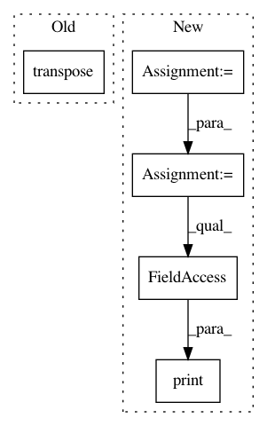

c5171109a44b9383f655676a90903e4c4d001014,dataset/models/tf/faster_rcnn.py,FasterRCNN,create_anchors,#FasterRCNN#Any#Any#,338
Before Change
cur_anchors = np.concatenate(cur_anchors, axis=1)
anchors.append(np.array(cur_anchors, np.int32))
anchors = np.array(anchors).transpose(1, 0, 2).reshape(-1, 4)
return anchors
@classmethod
After Change
cur_anchors = [np.expand_dims(vector, 1) for vector in [y, x, height, width]]
cur_anchors = np.concatenate(cur_anchors, axis=1)
anchors.append(np.array(cur_anchors, np.int32))
anchors = np.array(anchors)
print(anchors.shape)
if data_format == "channels_last":
anchors = anchors.transpose(1, 0, 2)
print(anchors.shape)
anchors = anchors.reshape(-1, 4)
return anchors
@classmethod
In pattern: SUPERPATTERN
Frequency: 3
Non-data size: 5
Instances
Project Name: analysiscenter/batchflow
Commit Name: c5171109a44b9383f655676a90903e4c4d001014
Time: 2017-12-05
Author: a.kozhevin@analysiscenter.ru
File Name: dataset/models/tf/faster_rcnn.py
Class Name: FasterRCNN
Method Name: create_anchors
Project Name: geomstats/geomstats
Commit Name: 506b234094009d55d326f1ce957f53f15d4b65ee
Time: 2018-02-26
Author: ninamio78@gmail.com
File Name: geomstats/spd_matrices_space.py
Class Name:
Method Name: group_exp
Project Name: geomstats/geomstats
Commit Name: 506b234094009d55d326f1ce957f53f15d4b65ee
Time: 2018-02-26
Author: ninamio78@gmail.com
File Name: geomstats/spd_matrices_space.py
Class Name:
Method Name: group_log